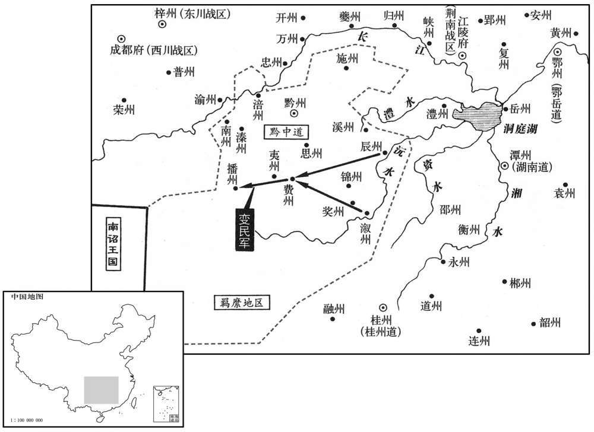

公元811年资治通鉴：本年记事、原文与白话对照
按原书编年位置阅读；追叙和史论不等于本年发生的事件。白话采用所据译本，缺译不以生成译文补齐。
卷238 · 本年记事
公元811年 · 唐宪宗昭文章武大圣至神孝皇帝元和六年
六年〔（辛卯、八一一）〕
上传原文的注释括号有异常，字符原样保留；无法可靠划分的段落默认全文显示。
本年事件索引（现代整理）
- 白居易担心各镇将借吴少阳获任为例，要求赦免
- 白居易指出酷暑、饥渴可能令军队溃散
- 白居易警告回鹘、吐蕃可能乘唐军疲弊入寇
- 卢从史暗通王承宗并故意拖延讨伐
- 裴垍策反卢从史牙将王翊元，掌握其通敌证据
- 吐突承璀诱捕卢从史，乌重胤平息昭义军骚乱
- 范希朝、张茂昭在木刀沟击败王承宗军
- 李绛反对吐突承璀私授乌重胤昭义节度使
- 卢从史被贬为驩州司马
- 昭义军三千余人夜间溃逃至魏州
- 李吉甫奏请裁撤冗官并核定俸禄
- 富平人梁悦报父仇杀秦杲，朝廷杖流梁悦
- 吏部奏报并省内外冗官
- 黔州大水毁城，辰溆蛮人反叛
- 弓箭库使刘希光受贿被赐死，吐突承璀改任淮南监军
- 十六宅诸王女由朝廷择配
- 宪宗任李绛为同平章事
- 黔州奏报张伯靖寇播州、费州
- 李涉为吐突承璀求情遭贬
- 惠昭太子李宁薨
- 天下大稔，米价低至每斗二钱
春，正月，甲辰，以彰义留后吴少阳为节度使。
春季，正月，甲辰（初九），宪宗任命彰义留后吴少阳为节度使。
庚申，以前淮南节度使李吉甫为中书侍郎、同平章事。二月，壬申，李藩罢为太子詹事。
庚申（二十五日），宪宗任命前任淮南节度使李吉甫为中书侍郎、同平章事。二月，壬申（初七），李藩被罢为太子詹事。
己丑，忻王造薨。〔造，代宗之子，叔袓也。〕
己丑（二十四日），忻王李造去世。
宦恶李绛在翰林，〔恶，乌路翻。〕以为户部侍郎，判本司。〔判本司者，判户部职事。唐自中世以后，户部侍郎或判度支，故以判户部为判本司，此二十四司之司也。〕上问：〔【章：甲十一行本「问」下有「绛」字；乙十一行本同；退斋校同。】〕「故事，户部侍郎皆进羡余，〔羡，弋线翻。〕卿独无进，何也﹖」对曰：「守土之官，厚敛于人以市私恩，天下犹共非之；况户部所掌，皆陛下府库之物，给纳有籍，安得羡余！若自左藏输之内藏〔敛，力赡翻。藏，徂浪翻。〕以为进奉，是犹东库移之西库，臣不敢踵此弊也。」〔自玄宗时，王佅岁进钱以供天子燕私，至裴延龄而其弊极矣。〕上嘉其直，益重之。
宦官不愿意让李绛在翰林院任职，使他出任户部侍郎，兼管户部。宪宗询问李绛说：“依照惯例，户部侍郎都要进献额外税收，唯独你不肯进献，这是为什么呢？”李绛回答说：“守卫疆土的地方官员，向百姓征收沉重的赋税来换取私人的恩惠，天下的人们尚且共同非难他们，何况户部掌管着的，都是陛下府库中的物品，支出与交纳都有帐簿记载，怎么会有额外的盈余！如果将财物从左藏转运到内库中去，以此作为进献的供物，这就如同将财物从东边的库房搬动到西边的库房，我可不敢因袭这一弊病啊。”宪宗嘉许李绛的耿直，更加器重他了。
乙巳，上问宰相：「为政宽猛何先﹖」权舆对曰：「秦以惨刻而亡，汉以宽大而兴」。太宗观明堂图，禁抶人背；〔事见一百九十三卷贞观四年。抶，丑栗翻。〕是故安、史以来，屡有悖逆之臣，皆旋踵自亡，〔悖，蒲内翻，又蒲没翻。〕由袓宗仁政结于人心，人不能忘故也。然则宽猛之先后可见矣。」上善其言。
乙巳（疑误），宪宗询问宰相说：“执掌大政的宽和与严厉应当哪个居于首位？”权德舆回答说：“秦朝因残酷苛刻而灭亡，汉朝因宽和大度而兴盛。太宗观看《明堂图》，禁止鞭打人们的脊背。所以安禄山、史思明以来，屡次出现悖乱忤逆的臣下，但在转足之间都自取灭亡了。这是由于祖宗的仁政维系着人心，人们不能够忘怀的缘故啊。这样说来，宽和与严厉应该孰先孰后是很清楚的了。”宪宗很赏识权德舆的进言。
夏，四月，戊辰，以兵部尚书裴垍为太子宾客，李吉甫恶之也。〔恶，乌路翻。〕
夏季，四月，戊辰（初四），宪宗任命兵部尚书裴为太子宾客，这是因为李吉甫憎恶他的原故。
庚午，以刑部侍郎、盐铁转运使卢坦为户部侍郎、判度支。或告泗州刺史薛謇为代北水运使，有异马不以献；事下度支，〔謇，知辇翻。下，户嫁翻。〕使巡官往验，未返，上迟之，使品官刘泰昕按其事。〔唐内侍省有品官，白身，二千九百三十一人。昕，许斤翻。〕卢坦曰：「陛下既使有司验之，又使官继往，岂大臣不足信于品官乎！臣请先就黜免。」上召泰昕还。〔还，音旋，又如字。〕
庚午（初六），宪宗任命刑部侍郎、盐铁转运使卢坦为户部侍郎、判度支。有人告发泗州刺史薛謇在担任代北水运使时，曾有一匹不同寻常的好马，却没有进献上来。事情下交度支查问，命令巡官前去验察，尚未返回，宪宗嫌事情办得太慢，便让品官刘泰昕按察此事。卢坦说：“既然陛下让主关部门验察此事，却接着又让品官前往，难道是大臣比品官还不值得相信吗！请让我先来接受罢免吧。”于是，宪宗将刘泰昕传召回来了。
五月，前行营粮料使于皋谟、董溪〔行营，谓前讨恒州行营。〕坐赃数千缗，敕贷其死；皋谟流春州，溪流封州，行至潭州，并追遣中使赐死。〔春州，汉合浦邵高凉县地，隋为高凉邵之阳春县，唐置春州，京师东南六千四百四十八里。封州，至京师水陆四千五百一十里。潭州，京师南二千四百四十五里。〕权德舆上言，以为：「皋谟等罪当死，陛下肆诸市朝，〔何晏曰：已刑而陈其尸曰肆。朝，直遥翻。〕谁不惧法！不当已赦而杀之。」溪，晋之子也。〔董晋相德宗，后镇宣武，薨于镇。〕
五月，前任行营粮料使于皋谟和董溪因贪污数千缗钱财而获罪，宪宗颁敕免除了他们的死罪，于皋谟被流放春州，董溪被流放封州。当他们走到潭州时，宪宗又追派中使赐他们自裁而死。权德舆进言认为：“于皋谟等二人的罪行应当处死，陛下将他们陈尸闹市，还有谁敢不畏惧法纪！但陛下不应该在赦免他们以后，却又将他们杀掉。”董溪是董晋的儿子。
庚子，以金吾大将军李惟简为凤翔节度使。〔李惟简，惟旨之弟也。〕陇州地与吐蕃接，旧常朝夕相伺，〔伺，相吏翻。〕更入攻抄，〔更，工衡翻。抄，楚交翻。〕人不得息。惟简以为边将当谨守备，蓄财谷以待寇，不当小利，起事盗恩，〔生事邀功窃取官赏，是为盗恩。〕禁不得妄入其地；〔禁妄入吐蕃界。〕益市耕牛，铸农器，以给农之不能自具者，增垦田数十万亩。属岁屡稔，〔属，之欲翻。屡，良遇翻，又如字。〕公私有余，贩者流及他方。
庚子（初七），宪宗任命金吾大将军李惟简为凤翔节度使。陇州与吐蕃接壤，以往经常天天相互侦察，交替着进入敌方攻打抄掠，人们不得宁息。李惟简认为边疆将领应当周密设防，积蓄资财和谷物，等待敌军的到来，不应当着眼细小的利益，惹起事端，窃取官家的赏赐。他禁止人们随便进入吐蕃的疆境，同时逐渐购买耕牛，铸造农用器具，以便供给不能自己备办耕牛与农具的农民，结果增垦田地数十万亩。适值一连几年丰收，公家与私人有了余粮，于是商人将粮食贩运到外地出售。
赐振武节度使阿跌光进姓李氏
宪宗赐给振武节度使阿跌光进姓氏为李氏。
六月，丁卯，李吉甫奏：「自秦至隋十有三代，〔吉甫所谓十三代，以秦、汉、魏、晋、宋、齐、梁、陈、北魏、北齐、周、隋为数也。〕设官之多，无如国家者。天宝以后，中原宿兵，见在可计者八十余万，〔见，贤遍翻。〕其余为商贾、僧、道不服田亩者什有五六，〔贾，音古。〕是常以三分劳筋苦骨之人奉七分待衣坐食之辈也。今内外官以税钱给俸者不下万员，天下三百余县，或以一县之地而为州，一乡之民而为县者甚众，请敕有司详定废置，吏员可省者省之，州县可并者并之，入仕之涂可减之。又，国家旧章，依品制俸，官一品月俸钱三十缗；〔永徽之制，一品月俸八千。开元二十四年，令百官防合庶仆俸食杂用，以月给之，总称月俸，一品为钱三万一千。〕职田禄米不过千斛。〔唐初给一品职田六十顷、禄七百石。〕艰难以来，增置使额，厚给俸钱，〔自兵兴后，权臣增领诸使，月给厚俸，比开元制禄数倍。〕大历中，灌臣月俸至九千缗，州无大小，刺史皆千缗。〔新志云：权臣月俸有至九十万者，刺史亦至十万，即此数也。〕常袬为相，始立限约，〔事见二百二十五卷代宗大历十二年。〕李泌又量其闲剧，随事增加，〔事见二百三十三卷德宗贞元四年。量，音良；下同。〕时谓通济，理难减削。然犹有名存职废，或额去俸存，闲刻之间，厚薄顿异。请敕有司详考俸料、杂给，量定以闻。」〔按常袬为相，增京官正员及诸道观察使、都团练使、副使以下料钱。李泌为相，又增百官及畿内官月俸，复置手力资课岁给钱。左、右卫上将军以下又有六杂给：一曰粮米，二曰盐，三曰私马，四曰手力，五曰随身，六曰春、冬服。私马则有刍豆，手力则有资钱，随身则有粮、、米盐，春、冬服则有布、绢、絁、紬、绵。射生、神策大将军增以鞋。州县官有手力、杂给钱。李吉甫请就加详校而量定之也。〕于是命给事中段平仲、中书舍入韦贯之、兵部侍郎许孟容、户部侍郎李绛同详定。
六月，丁卯（初四），李吉甫上奏说：“由秦朝到隋朝的十三个朝代，设置官员的数量，没有比我朝更多的了。天宝年间以后，中原地区驻屯军队，现在能够计算出来的就有八十多万人，其余作为商人、僧人、道士等不从事农业的人口有十分之五六，这是经常以十分之三的劳苦筋骨的人们去奉养十分之七的不织而衣、不劳而食的人们。现在，朝廷内外需要以税收的钱财供给薪俸的官员不少于一万人，全国有一个千三百多个县，以一个县的地方设置成一个州，以一个乡的人口编制成一个县的情况为数很多。请陛下敕令有关部门详细地规定州县的废弃与设立，对可以省除的吏员要省除，对可以合并的州县要合并，对可以减少的入仕途径要减少。再者，根据朝廷以往的典章制度，依照官员的品级制定薪俸，一品官员每月薪俸钱三十缗，职田上所产的禄米不超过一千斛。国家遭受艰难困苦以来，增设诸使的名额，发给优厚的薪俸钱，到大历年间，有权势的大臣每月薪俸达到钱九千缗，各州不分大小，刺史一概每月薪俸钱一千缗。常衮担任宰相时，开始设立限制约束，李泌又酌量职务清闲与繁重的不同情况，顺从事情的机宜增加薪俸，当时号称通达融贯，从道理上说来是难以削减的。然而，仍然还有名义存在而职事废弃，或者名额免除而薪俸存在的情形，在任职的清闲与繁重之间，薪俸的优厚与菲薄顿时显出差别来了。请陛下敕令有关部门详细考核薪俸食料、杂项供给，酌情参定，上报闻知。”因此，宪宗命令给事中段平仲、中书舍人韦贯之、兵部侍郎许孟容、户部侍郎李绛共同详细参定。
秋，九月，富平人梁悦报父仇，杀秦杲，自诣县请罪。敕：「复雠，据礼经则义不同天，〔礼记曰：父之雠不与共戴天。〕征法令则杀人者死。礼、法二事，皆王教之大端，有此异同固资论辩，宜令都省集议闻奏。」〔都省，尚书都省。〕职方员外郎韩愈议，以为：「律无其条，非阙文也。盖以不许复雠，则伤孝子之心而乖先王之训；许复雠，则人将倚法专杀，无以禁止其端矣。故圣人丁宁其义于经，而深没其文于律，其意将使法吏一断于法，〔断，丁乱翻。〕而经术之士得引经而议也。宜定其制曰：『凡复父雠者，事发，具申尚书省集议奏闻，酌其宜而处之。』〔处，昌翻。〕则经律无失其指矣。」敕：「梁悦杖一百，流循州。」〔循州，古龙川县地。旧志：至东都四千八百里。加东都至京师道里，从可知也。〕
秋季，九月，富平人梁悦为父亲报仇，杀死了秦杲，主动前往县衙请求治罪。敕书称：“有关复仇的规定，若根据《礼记》的说法，在道理上说与仇人应是不共戴天的，但若引证法令条文，杀人的人就应当处以死刑。礼教与法令两项，都是帝王实行教化的重大根据，既然其间存在着这样的区别，固然应当通过论说辨析商量明白，应该让尚书都省召集有关人员计议，奏报闻知。”职方员外郎韩愈的议论认为：“刑律中没有关于与杀父的仇人不共戴天的条文，并不是出现了阙疑不书的文字。，而是由于若不允许为父报仇，便伤害了孝子的心愿，而且违背了先代帝王的教训；若允许为父报仇，人们便将会凭借着法令擅自杀人，从而无法禁止此类事情的发生。所以圣人在经书里将此中的含义反复强调，而在刑律中又将此类条文深深隐没了。圣人的用意是让执法的官吏一概本着法令裁决，而让尊奉经学的人士得以援引经典而加以议论。应该将所规定的此项制度表达为：‘凡是为父亲报仇的人，事情被举发后，应当一概申报尚书省，由尚书省召集有关人员计议奏报，斟酌合理的情由，作出应有的处治。’这样，经书与刑律便都不会失去各自的意指了。”宪宗敕令：“对梁悦处以杖刑一百，流放循州。”
甲寅，吏部奏准敕并省内外官计八百八员，诸司流外一千七百六十九人。
甲寅（二十二日），吏部上奏说，依据敕令合并与省除朝廷内外官员计有八百零八人、各部门九品以下的吏员一千七百六十九人。
黔州大水坏城郭，〔黔，音禽，又其廉翻。坏，音怪。〕观察使窦群癹溪洞蛮以治之；〔黔中观察使领辰、锦、施、叙、奖、夷、播、思、费、南、溪、溱等州，又有羁縻州五十，大率皆溪洞蛮也。治，直之翻。〕督役太急，于是辰、溆二州蛮反，〔叙州，本巫州，天授二年改沅州，开元十三年以沅、原声相近，复为巫州，大历五年更名叙州。考异曰：旧传作「辰、锦二州」，今从实录。〕群讨之，不能定。戊午，贬群开州刺史。〔开州，治开江县，因县名州，京师南一千四百六十里。〕
黔州发生严重的水灾，内城与外城都被毁坏。黔中观察使窦群征发溪洞蛮人来修治内城与外城，由于督责事功过于急切，于是辰州和溆州两地的蛮人反叛了。窦群讨伐蛮人，没有能够将他们平定。戊午（二十六日），宪宗将窦群贬为开州刺史。
冬，十一月，弓箭库使刘希光〔唐内诸司使，弓箭库使在军器库使之下。〕受羽林大将军孙铸钱二万缗，为求方镇，〔暃，神六翻。为于伪翻。〕事觉，赐死。事连左卫上将军、知内侍省事吐承璀，丙申，以承璀为淮南监军。上问李绛：「朕出承璀何如﹖」对曰：「外人不意陛下遽能如是。」上曰：「此家奴耳，向以其驱使之又，〔承璀事帝于东宫。〕故假以恩私；若有违犯，朕去之轻如一毛耳！」〔去，羌吕翻。〕
冬季，十一月，弓箭库使刘希光接受了羽林大将军孙二万缗钱，便为他谋求节度使的职务，结果被发觉了，宪宗赐他自裁而死。事情牵连到左卫上将军、知内侍省事吐突承璀，丙申（初五），宪宗任命吐突承璀为淮南监军。宪宗询问李绛：“朕将吐突承璀任为外官怎么样呢？”李绛回答说：“外界人士想不到陛下忽然能够这么做。”宪宗说：“此人只是一个家奴而已。以往，朕觉得使唤他的时间很长了，所以因私情恩宠而宽宥了他。倘若他有违纪犯法的行为，朕抛弃他就如丢掉一根毫毛一样轻易呢！”
十六宅诸王既不出合，〔考异曰：新李吉甫传作「十宅」〕。按旧纪，自此至唐末，皆云「十六宅」。新传误也。余按开元以来，皇子多居禁中，诏附苑城为大宫，分院而处，号十王宅，中人押之；就夹城参天子起居。其后增为十六宅。旧史曰：开元于安国寺东附苑城为大宅，分院而居，号十王宅。十王，谓庆、忠、棣、鄂、仪、颍、永、荣、延、济。其后盛、仪、寿、丰，恒、梁六王又就封入内宅，此十六宅得名之始也。〕其女嫁不以时，选尚者皆由宦官，率以厚赂自达。李吉甫上言：「自古尚主必择其人，独近世不然。」十二月，壬申，诏封恩王等六女为县主，委中书、门下、宗正、吏部选门地人才称可者嫁之。〔称，尺证翻。〕
本段缺少可靠对应白话，原文完整保留；未使用生成译文。
己丑，以户部侍郎李绛为中书侍郎、同平章事。〔考异曰：旧传曰：「吐突承璀恩宠莫二，是岁，将用绛为宰相，前一日出璀为淮南监军；翌日降制，以绛同平章事。」新传曰：「绛所言无不听，帝欲遂以为相。而承璀宠方盛，忌其进，阴有毁短，帝乃出承璀淮南监军；翌日，拜绛同平章事。」今据实录，出承璀至绛入相五十四日。旧传云：「翌日」，误也。〕李吉甫为相，多修旧怨，上颇知之，故擢绛为相。吉甫善逄迎上意，而绛鲠直，数争论于前；〔数，所角翻。〕上多直绛而从其言，由是二人有隙。
己丑（二十八日），宪宗任命户部侍郎李绛为中书侍郎、同平章事。李吉甫出任宰相以来，往往报复旧日与自己结怨的人们，宪宗也略微了解一些情况，因此才提升李绛出任宰相。李吉甫善于逢迎皇上的意旨，而李绛刚正不阿，二人屡次在宪宗面前争论，宪宗时常认为李绛正确，听从他的主张。因此，二人有了嫌隙。
闰月，辛卯朔，黔州奏：辰、溆贼帅张伯靖寇播州、费州。〔溆，音叙。〕
闰十二月，辛卯朔（初一），黔州上奏说：辰州与溆州两地溪洞蛮人头领张伯靖侵犯播州与费州。

晧试太子通事舍人李涉〔唐太子通事舍人属右春坊，员八人，正七品下，掌导宫臣辞见、承令劳问。此职事官也。若涉则试官。〕佑上于吐突承璀恩顾未衰，乃投匦上疏称「承璀有功，希光无罪。承璀又委心腹，不宜遽弃。」知匦使、谏议大夫孔戣见其副章，诘责不受；涉乃行赂，诣光顺门通之。〔戣，渠龟翻。武后垂拱四年，置匦四枚，共为一室，列于朝堂：东方木位，主春，配仁，色青，仁者以亭育为本，以青匦置于东，有能告养人及劝农之事者投之，铭曰延恩匦；南方火位，主夏，色赤，配信，信者风化之本，以丹匦置于南，有能正谏、论时政得失者投之，铭曰招谏匦；西方金位，主秋，色白，配义，义者以断决为本，以素匦置于西，有欲自陈抑屈者投之，铭曰申冤匦；北方水位，主冬，色玄，配智，智者谋虑之本，以玄匦置于北，能告以谋智者投之，铭曰通玄匦。以谏议、补、拾充使于朝堂，知匦事。每日所有投书，至暮并即进入；其诣光顺门进状者，合门使收而进之。宋朝改知匦使为理检使。宋白曰：光顺门外即昭庆门。匦，居洧翻。〕戣闻之，上疏极言「涉奸险欺天，请加显戮。」戊申，贬涉峡州司仓。〔峡州，古夷陵地，蜀置宜都郡，梁置宜州，后魏改拓州；取开拓之义；周武帝以州扼三峡之口，改曰峡州。旧志：峡州，京师东南一千八百八十八里。〕涉，渤之兄；〔李渤时隐于少室山。〕戣，巢父之子也。〔孔巢父死于李怀光之难。〕
试太子通事舍人李涉得知宪宗对吐突承璀的恩宠眷顾并未减弱，便在收受臣民意见的铜匦中投递章疏，内称：“吐突承璀立有功劳，刘希光没有罪过。吐突承璀被陛下长期托付亲信之任，不应当聚然将他抛弃。”知匦使、谏议大夫孔看到了章疏的副本，对上奏的内容加以责问，不肯受理他的章疏。于是，李涉行贿，前往光顺门进状。孔得知消息后，上疏极力进言说：“李涉奸邪阴险，欺骗上天，请将他处决示众。”戊申（十八日）宪宗将李涉贬为峡州司仓。李涉是李渤的哥哥。孔是孔巢父的儿子。
辛亥，惠昭太子宁薨。〔宁立为太子，见上卷四年三月。〕
辛亥（二十一日），惠昭太子李宁去世。
是岁，天下大稔，米斗有直二钱者。
这一年，全国获得大丰收，有些地方一斗米才值两个钱。
译本中未与胡注本可靠对应的内容
以下另列供核对版本差异，不并入胡注本正文。
译本所附古文
[16]十六宅诸王既不出阁，其女嫁不以时，选尚者皆由宦官，率以厚赂自达。李吉甫上言：“自古尚主必择其人，独近世不然。”十二月，壬申，诏封恩王等六女为县主，委中书、门下、宗正、吏部选门地人才称可者嫁之。
译本白话
十六宅诸王既然都没有去做封地上的藩王，他们的女儿便不能按时出嫁，已经择偶下嫁的女儿都是通过宦官办成的，大都要以丰厚的贿赂为自己通融。李吉甫进言说：“自古以来，公主下嫁，必定要选择合适的人士，唯独近世以来不是这个样子了。”十二月，壬申（十一日），宪宗颁诏将恩王等人的六个女儿封为县主，委托中书省、门下省、宗正寺和吏部选择门第人才相当的人士，将县主许配给他们。